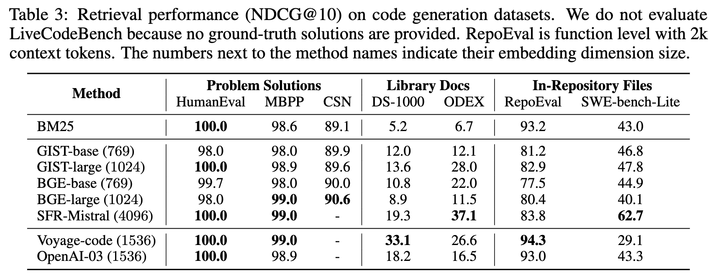
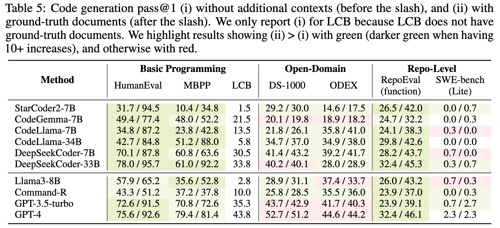
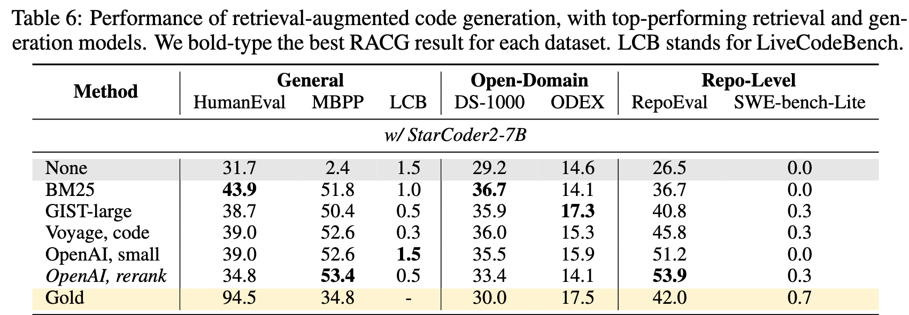
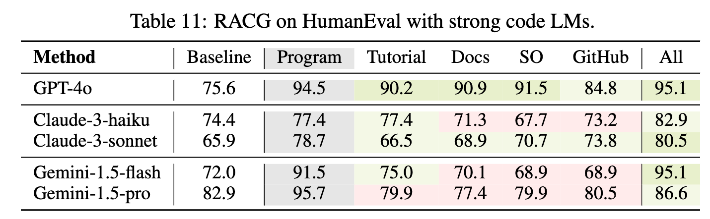

Many programs are challenging for language models (LMs) to generate using their parametric knowledge alone, yet most works generate programs solely based on problem descriptions. Given the success of retrieval-augmented generation in many text-oriented tasks, providing external resources such as library documentation or tutorials can facilitate code generation as well. Despite a few efforts on this, retrieval-augmented code generation (RACG) is still under-explored on various tasks and retrieval sources.
In this work, we conduct a systematic, large-scale analysis by asking: in what scenarios can current retrievers benefit code generation models? and what challenges do they have? We first curate a comprehensive evaluation benchmark, CodeRAG-Bench, encompassing three categories of code generation tasks, including general programming, open-domain, and repository-level problems. We also aggregate documents from five sources for models to retrieve contexts from: competition solutions, online tutorials, library documentation, StackOverflow posts, and GitHub repositories.
We examine top-performing models on CodeRAG-Bench by providing contexts retrieved from each or multiple sources. Although high-quality contexts can benefit code generation, current retrieval models often struggle to fetch useful contexts, and generation models minimally improve when having limited context lengths or RAG abilities. We hope the community uses CodeRAG-Bench as an effective testbed and continues to build better code-oriented RAG systems to leverage the full power of RACG.
CodeRAG-Bench is designed to enable rigorous evaluations and advance research on retrieval-augmented code generation. CodeRAG-Bench has some unique characteristics:
CodeRAG-Bench is the first large-scale code retrieval and RAG benchmark that consists of diverse programing tasks and heterogeneous retrieval sources collected from Github, StackExchange, Tutorials and existing programming solutions.
We found that while larger retrieval models often show superior performance, still retrieval performance is limited on more challenging tasks like DS-1000, ODEX and SWE-Bench, which may limit code RAG effectiveness.
Larger embedding models such as SFR-Mistral or Open AI embedding models also show significant increase of inference latency or index size.
We found that if gold documents are provided, most of the models including GPT-4 or GPT-3.5 (ChatGPT) can get significant gains on diverse tasks including general programing as well as repository level coding.
When we evaluate end-to-end RAG performance combining state-of-the-art generation and retrieval models, we see major improvements while in some tasks, we also observe gap between oracle retrieval and current model retrieval.
Some models including DeepSeekCoder benefit less from retrieval at inference time, suggesting that there is space for improvements to optimize code LMs for RAG scenarios.
We found in many coding tasks, retrieving from a larger, diverse datastore can give significant gains even on top of state-of-the-art GPT-4. This implies that while currently many code RAG only uses canonical data store (e.g., target repository), retrieving from larger datastore consisting of documents from different sources could further unlock the effectiveness of code RAG.
CodeRAG-Bench code is available at Github, and all resources are available at Huggingface Space.
Instructions to submit to the CodeRAG-Bench leaderboard will be available soon on Github.
@article{wang2024coderagbench,
author = {Wang, Zora Z. and Asai, Akari and Yu, Xinyan V. and Xu, Frank F. and Xie, Yiqing and Neubig, Graham and Fried, Daniel},
title = {CodeRAG-Bench: Can Retrieval Augment Code Generation?},
year = {2024},
}